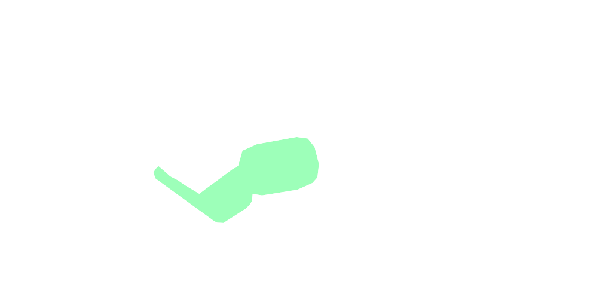
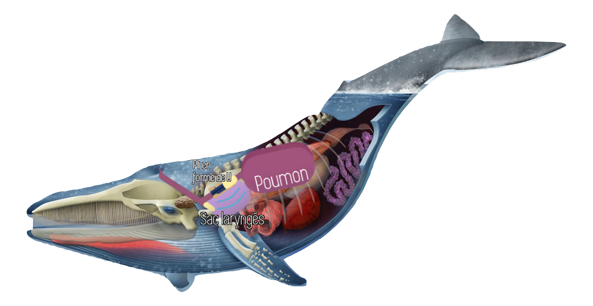

Remplir le texte à trou sur le baleine a partir de vos propre connaissances.
En cas de difficulté vous pouvez afficher les mots manquants en cliquant sur
Epreuve
validé
si vous avez moins de 3 erreurs.
Une fois l'epreuve terminer vous pouver continuez en cliquant sur ou recommencer cette epreuve en cliquant sur
La baleine bleue est un mammifère marin. C'est une espèce de pouvant dépasser mètre de longueur et peser 200 tonnes.
Elle se nourrit essentiellement d'un petit crustacé, le , mais parfois de petits poissons et calamars,
sa bouche est remplie de : des lames cornées qui garnissent la bouche des baleines.
Ils fonctionnent comme des et permettent de retenir le krill dans leur bouche tout en expulsant l'eau.
Les fanons peuvent mesurer jusqu'à mètres de long. La longévité de cette espèce est de 80 à 85 ans.
Les baleines bleues migrent entre les mers proches des pôles où elles se et les mers plus chaudes où elles se .
Elles vivent généralement seules ou avec un autre individu et sont les animaux les plus gros vivant actuellement sur terre.
Pour respirer la baleine bleue remonte à la surface et ouvre son .
Epreuve 1
Score :
Epreuve 2
La communication de l'animal
Epreuve 2 :
Comment jouer ?
Vous avez une définition lorsque vous passsez votre souris sur chaque mode de communication.
Le but est de mettre les actions de l’animal dans le mode de communication qu’il utilise pour les fairent.
Une fois que vous avez glissé la pastille au bon endroit, elle devient verte, vous pouvez alors avoir une explication en passant votre souris dessus pour expliquer comment chaque action est communiqué.
Une fois l'epreuve terminer vous pouver continuez en cliquant sur ou recommencer cette epreuve en cliquant sur
Communication tactile
Communication sonore
Communication visuel
Communication chimique
S'identifier
Lien affectif
Se reproduire
Marquer son territoire
Hierarchisation du groupe
Se rencontrer
Signaler un danger
Chasser en groupe
S'informer
Epreuve 3
L'anatomie de l'animal
Epreuve 3 :
Comment jouer ?
Vous avez des informations quand vous passez votre souris sur chaque organe.
Le but est de découvrir les organes servant à la communication chez cette espèce.
Cette épreuve est en réalité une activité car elle n'est pas évaluée, c'est une épreuve découverte.
Une fois l'activité terminer vous pouver continuez en cliquant sur
Felicitation vous avez trouvez l'organe, regarder a 1min27 pour decouvrir comment les baleines produisent du son


Cette épreuve était une activité! Félicitations! Tu as acquis de nouvelles connaissances!
Epreuve 4
Quizz Final !
Epreuve 4 :
Comment jouer ?
Vous avez des questions, il faut cocher la ou les bonne(s) réponse(s).
Le but est de vous évaluer sur les connaissances que vous avez acquis au cours des épreuves.
Si vous réussissez ce QCM l'animal est validé!
Une fois le QCM terminer vous pouver continuez en cliquant sur ou recommencer cette epreuve en cliquant sur